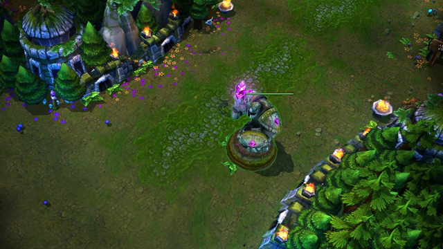

|  |
Rotas |
Existem três caminhos que conectam sua base à do inimigo. Esses caminhos são chamadas rotas, e é por elas que as equipes inimigas se encontram. Para vencer a partida, você deve avançar pela rota até o coração da base inimiga e destruir o nexus. |